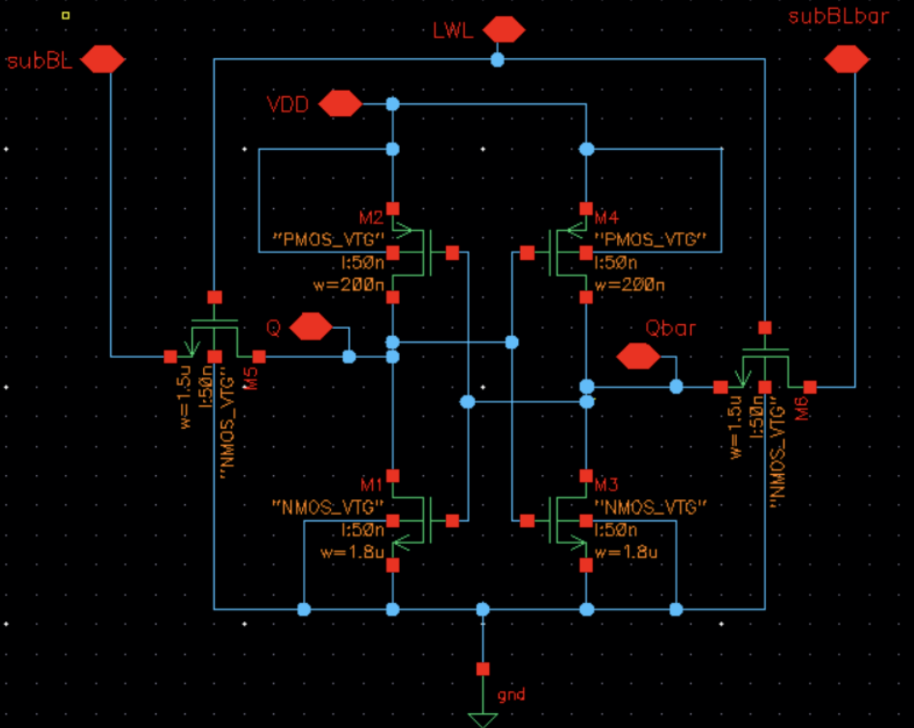
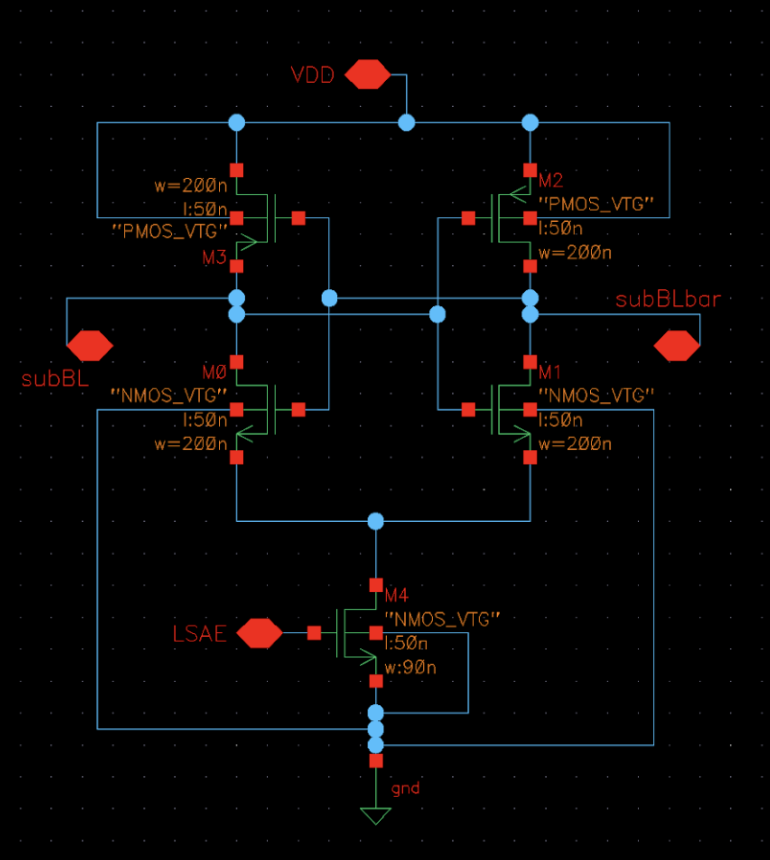
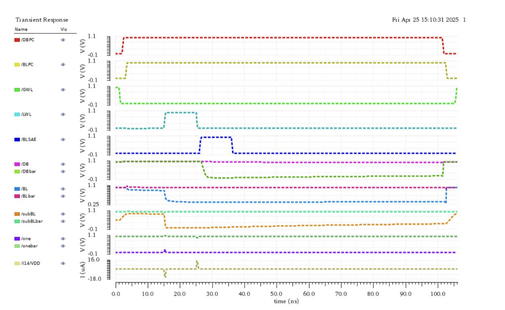
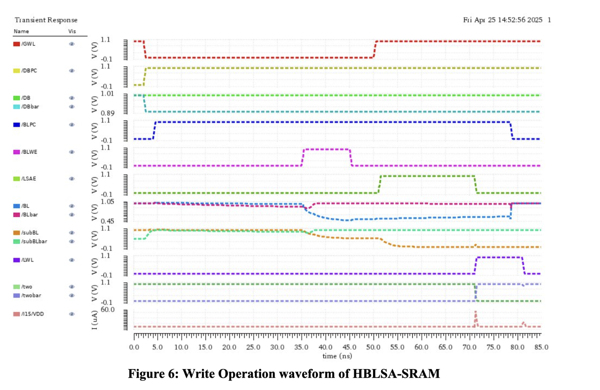
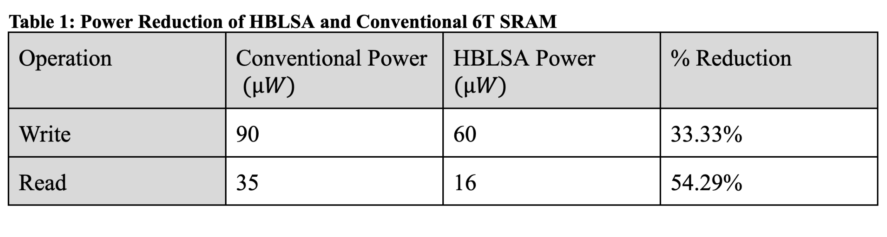

%% Replication and Analysis of Low-Power HBLSA SRAM %%
← Back to Main
Key Summary
- Simulated a 6T SRAM using a Hierarchical Bit-Line and Local Sense Amplifier (HBLSA) architecture.
- HBLSA structure isolates high-capacitance bit-lines using local sense amplifiers to lower dynamic power.
- Compared power and performance against a conventional 6T SRAM using identical test conditions.


HBLSA Architecture
- Hierarchical layout minimizes bit-line capacitance.
- Local Word Line (LWL) selects specific memory cells.
- Global Word Line (GWL) decouples unused groups, conserving power.
- Local Sense Amplifiers amplify sub-bit line signals during write operations.


Simulation Results
Write Operation
- HBLSA SRAM: 60μA vs Conventional: 90μA
- Power savings: 33.33%
Read Operation
- HBLSA SRAM: 16μA vs Conventional: 35μA
- Power savings: 54.29%
